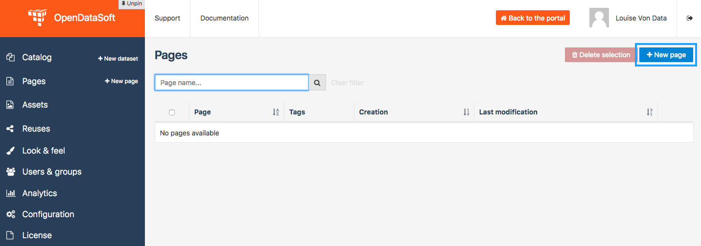
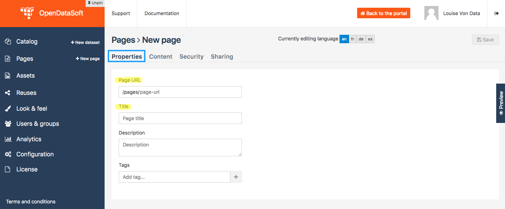
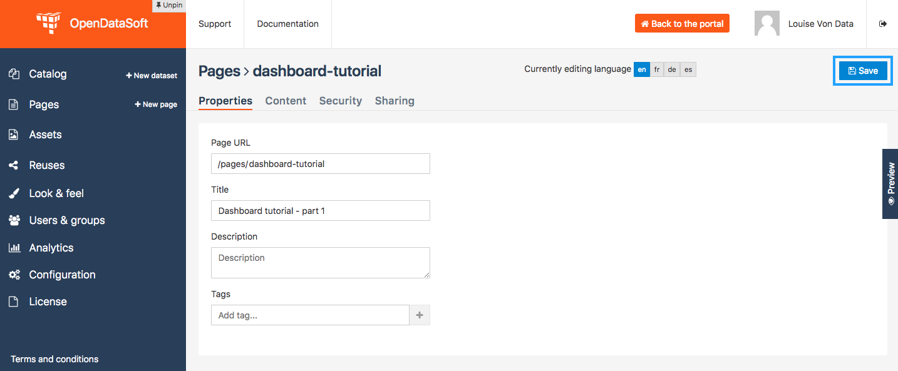
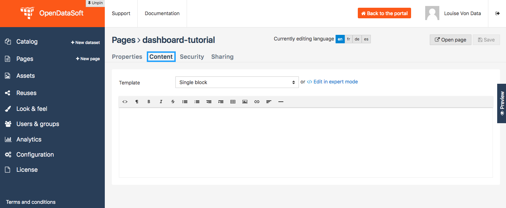
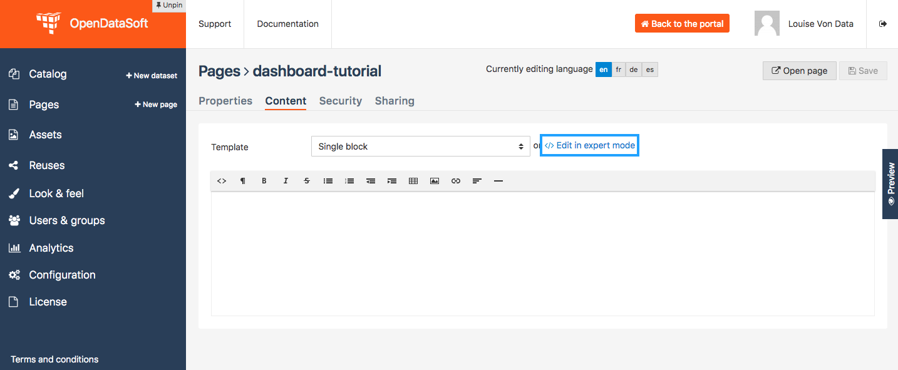

How to build a dashboard (part 1: dataset visualizations)¶
Level: ★★☆☆ - Estimated completion time: 30 minutes
This tutorial will teach you how to create a dashboard using 3 visualizations from a dataset published on an OpenDataSoft portal.
During this tutorial, you will learn:
- what a widget is
- what an iframe is
- what is the difference between a widget and an iframe
- how to use a widget in a content page created with OpenDataSoft
Prerequisites:
- In order to create a dashboard, you need to have access to the back office of an OpenDataSoft portal and the “Edit all pages” permission.
- Pick a dataset from the portal, with which you want to work during the tutorial. Preferably, choose a dataset with a Table view, as well as a Map view and an Analyze view. If you do not want to pick your own dataset, you can follow the tutorial with the same dataset as the one used for the examples of the tutorial : link of the dataset. >> https://data.opendatasoft.com/explore/dataset/world-heritage-list%40public-us/ ?
[screenshot result of the tutorial]
Create your content page
1 _ Go the Back office, in the Pages section.
2 _ Click on the + New page button, to create a new content page.
3 _ By default, you land on the Properties tab. It contains several information about the page, some of which you need to fill up otherwise you will not be able to save the page. Enter a page URL suffix and a title. You can also add a description and tags.
4 _ Click the Save button to save your newly created content page.
5 _ Go to the Content tab.
6 _ Click on </> Edit in expert mode to access the HTML/CSS code of the page. A pop up will appear, click on “Yes, switch to expert mode” for confirmation matter.
In the HTML/CSS code area, you should see the following code:
<div class="container-fluid">
<div class="ods-box" ></div>
</div>
Important
In the HTML language, every element is represented by a tag. This tag is written between brackets and always comes in a pair, with an opening bracket and a closing bracket. E.g. <p></p> for paragraphs, <h1></h1> for first level title, <div></div> for a division/section, etc.
The <div> tags help formatting your page the right way, in order for all elements of your content page to be in a predefined frame with borders. All new elements that you will add in the future should be put inside these 2 <div> tags.
<div class="container-fluid">
<div class="ods-box">
THIS IS WHERE YOU WILL PUT YOUR CODE
</div>
</div>
7 _ Save your page.
8 _ Click on the Open page button to see the current result of your page.
Put content in your page: data visualizations
Get the widget code of a visualization
Important
A widget is a piece of code that allows anyone to integrate an interactive element directly on a webpage. In OpenDataSoft, there are several widgets which are all listed and explained in the widget documentation. Some of the most common OpenDataSoft widgets -those we will use in this tutorial- are the visualization widgets. Each data visualizations of a published dataset is indeed available as a widget, which code is displayed below the visualization, ready to be copied!
9 _ Go to the portal where the dataset you have chosen for the dataset is published. Make sure you are on your dataset’s page of the portal, where you can see the different data visualizations available.
10 _ Let’s start with the Table view. Click on the Table tab.
11 _ Scroll down the table. You should see 3 tabs: Share, Embed and Widget. Share displays the direct URL of the visualization. Embed displays the iframe code of the visualization. Widget displays the widget code of the visualizations. Each, whereas it is a URL or a code, are ready to be copied and pasted. For this tutorial, we will use the widget codes of the Table, Map and Analyze visualizations of our chosen dataset.
Important
An iframe allows anyone to show OpenDataSoft content in an isolated frame, independent from the rest of the page. Iframes, as opposed to widgets, are indeed all-in-one, integrated, and secure, so they can be embedded outside the OpenDataSoft environment, at the cost of interaction and customization. Widgets are more customizable and interactive (i.e: several widgets on the same page can interact with each other), but can only work inside OpenDataSoft pages.
12 _ Still in the Table tab of your dataset, where the widget code is displayed, click the COPY button to copy the widget code of the table visualization.
Add a visualization widget to your page
13 _ Go back to the back office, to continue to edit your OpenDataSoft content page.
14 _ Paste your table visualization widget code at the right place, between the <div class=”ods-box”> tag (see step 6). If you used the same dataset as in this tutorial, you should have the following code:
<div class="container-fluid">
<div class="ods-box">
<ods-dataset-context context="worldheritageunescolist" worldheritageunescolist-dataset="world-heritage-unesco-list">
<ods-table context="worldheritageunescolist"></ods-table>
</ods-dataset-context>
</div>
</div>
15 _ Save your page and click the Open page button: there is now a table visualization in our page!
[screenshot content page with table view embedded]
Add more widgets to your page: map and chart
16 _ Let’s add a map to our page! Just like before, get the widget code of the Map view of your chosen dataset (see steps 9 to 12 in Get the widget code of a visualization, but applied to the Map tab).
17 _ Paste your map visualization widget code below the widget code of the table visualization (see Add a widget to your page). If you used the same dataset as in this tutorial, you should have the following code:
<div class="container-fluid">
<div class="ods-box">
<ods-dataset-context context="worldheritageunescolist" worldheritageunescolist-dataset="world-heritage-unesco-list">
<ods-table context="worldheritageunescolist"></ods-table>
</ods-dataset-context>
<ods-dataset-context context="worldheritageunescolist" worldheritageunescolist-dataset="world-heritage-unesco-list">
<ods-map context="worldheritageunescolist" scroll-wheel-zoom="false" location="2,18.46273,-0.44037"></ods-map>
</ods-dataset-context>
</div>
</div>
18 _ Let’s add one more thing: a chart! Get the widget code of the Analyze view of your chosen dataset.
19 _ Paste your analyze visualization widget code below the widget code of the map visualization. Your code should now look something like that:
<div class="container-fluid">
<div class="ods-box">
<ods-dataset-context context="worldheritageunescolist" worldheritageunescolist-dataset="world-heritage-unesco-list">
<ods-table context="worldheritageunescolist"></ods-table>
</ods-dataset-context>
<ods-dataset-context context="worldheritageunescolist" worldheritageunescolist-dataset="world-heritage-unesco-list">
<ods-map context="worldheritageunescolist" scroll-wheel-zoom="false" location="2,18.46273,-0.44037"></ods-map>
</ods-dataset-context>
<ods-dataset-context context="worldheritageunescolist" worldheritageunescolist-dataset="world-heritage-unesco-list">
<ods-chart align-month="true">
<ods-chart-query context="worldheritageunescolist" field-x="date_inscribed" maxpoints="0" timescale="year">
<ods-chart-serie expression-y="area_hectares" chart-type="line" function-y="AVG" color="#4CDEF5" scientific-display="true">
</ods-chart-serie>
</ods-chart-query>
</ods-chart>
</ods-dataset-context>
</div>
</div>
20 _ Save your page and click the Open page button: this is what your page should look like by now!
[screenshot content page with 3 visualizations]
Complete your content page with a title
21 _ In HTML, titles (called headers) are generally defined by h1 brackets. The h doesnt change, it stands for “header”. The number (here 1) can be replaced by any number from 1 to 6, h1 being the highest level title and h6 the lowest. Above all visualization widget codes added to the page, and right below the div class=”ods-box” tag, add a high level title to your content page.
<div class="container-fluid">
<div class="ods-box">
<h1>WRITE THE NAME OF YOUR PAGE HERE</h1>
<ods-dataset-context context="worldheritageunescolist" worldheritageunescolist-dataset="world-heritage-unesco-list">
<ods-table context="worldheritageunescolist"></ods-table>
</ods-dataset-context>
<ods-dataset-context context="worldheritageunescolist" worldheritageunescolist-dataset="world-heritage-unesco-list">
<ods-map context="worldheritageunescolist" scroll-wheel-zoom="false" location="2,18.46273,-0.44037"></ods-map>
</ods-dataset-context>
<ods-dataset-context context="worldheritageunescolist" worldheritageunescolist-dataset="world-heritage-unesco-list">
<ods-chart align-month="true">
<ods-chart-query context="worldheritageunescolist" field-x="date_inscribed" maxpoints="0" timescale="year">
<ods-chart-serie expression-y="area_hectares" chart-type="line" function-y="AVG" color="#4CDEF5" scientific-display="true">
</ods-chart-serie>
</ods-chart-query>
</ods-chart>
</ods-dataset-context>
</div>
</div>
22 _ Save your page and click the Open page button: our page now has a title!
[screenshot page with title]
Congratulations! You have finished this tutorial and you now know how to create a simple dashboard with 3 dataset visualizations!
If you want to go further with your dashboard, you can follow the second part of this tutorial: “How to build a dashboard (part 2: formatting the dashboard & linking the widgets)”.